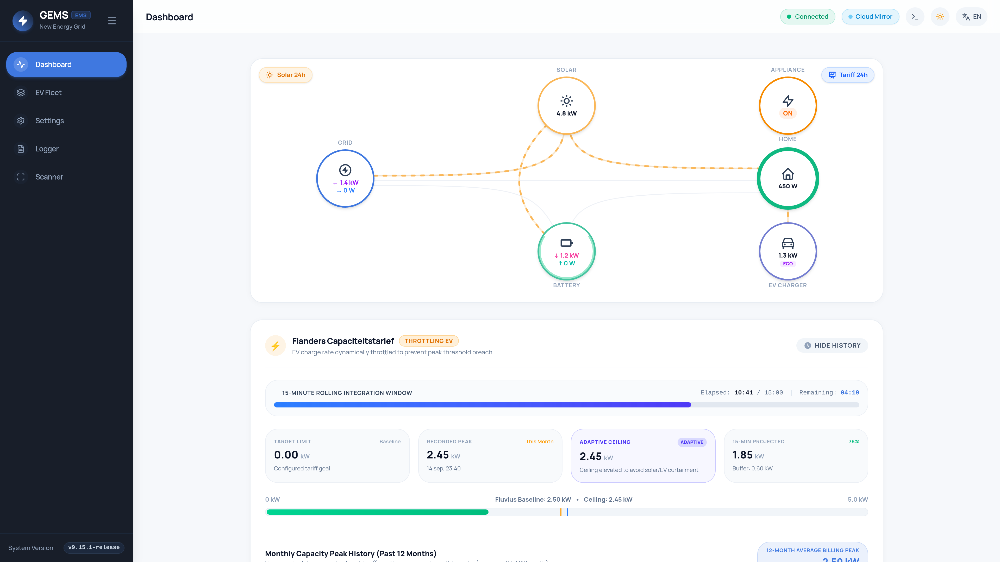

📕 Official Printable Field Manuals (PDF)
Comprehensive vector PDF manuals compiled with high-resolution system screenshots, hardware pinouts, and field checklists.
Installer Manual
Hardware, Devices, Flemish GSC & StrategyStep-by-step field commissioning for electricians and solar installers: Raspberry Pi 5 NVMe setup, Modbus TCP inverters, P1 smart meters, native OCPP, and Flanders peak shaving.
Homeowner & User Manual
Daily Operations, EV Modes & Energy ReportsHomeowner operation guide: Interactive PowerFlow hero diagram, click-to-reveal historical analytics modals, EV charging modes, negative price protection, and PDF reports.
GRID-EMS-SERVER Manual
Central Fleet, Telemetry & Remote CommandsTechnical guide for connecting edge GEMS to GRID-EMS-SERVER: Outbound-only TLS 1.3 architecture, hardware token pairing, JSON telemetry stream, and remote command execution.
Documentation Sections
Explore the full suite of manuals tailored for system administrators, installers, and home users:
Installation Manual
Step-by-step flashing of the custom Raspberry Pi OS image, Debian .deb package setup, Cockpit web console, and RS485/P1 wiring diagrams.
Configuration Reference
Comprehensive guide for Flanders Peak Shaving, Netherlands Zero-Export, Dynamic EPEX Arbitrage, Energy Contract formulas, and Smart Relays.
Explore Settings →User Operations Guide
Interactive PowerFlow hero diagram, click-to-reveal historical analytics modals, network discovery scanner, and EV charger integration (preferred Modbus TCP & native OCPP).
View User Guide →Device Templates (90)
Step-by-step guides and Modbus/OCPP/REST profiles for Huawei, SMA, Solis, Fronius, SolarEdge, Sungrow, Victron, RAEDIAN, EVBox, Mennekes, HomeWizard, Shelly, Eastron, and more.
Browse Device Library →Troubleshooting & FAQ
Diagnostic procedures for Modbus timeouts, P1 baud rate discrepancies, OCPP connection handshakes, SQLite WAL integrity, and system logs.
View Diagnostics →Remote Administration
Access the embedded Cockpit web terminal on port 9090 and pair Raspberry Pi Connect for cloudless screen sharing directly to the Wayfire kiosk.
Configure Remote Access →System Architecture & Core Philosophy
GEMS is architected as a cohesive, high-performance monolith designed to run continuously with near-zero resource consumption.
Database writes are buffered in memory and batched into 1-minute atomic transactions. Combined with SQLite Write-Ahead Logging (WAL mode) and memory-backed temporary storage, SD card write cycles are reduced by over 98% compared to standard logging daemons.
| Layer | Technology | Core Responsibilities |
|---|---|---|
| Backend Engine | Go (Golang 1.24) | Unified HTTP server, hardware polling tickers (1s/5s), control loops, Day-Ahead spot price fetching, and native OCPP WebSocket server. |
| Database & Timeseries | SQLite 3 (WAL mode) | Low-overhead local storage, in-memory aggregation buffers, automated 90-day retention pruning worker. |
| Frontend SPA | Vue 3 + TypeScript + Tailwind CSS | Reactive dashboard, animated SVG PowerFlow vectors, Chart.js time-series graphs, and zero-YAML UI configuration. |
| Realtime Telemetry | Server-Sent Events (SSE) | Unidirectional sub-second metric streaming (/api/live) eliminating client AJAX polling overhead. |
| OS & Display | Wayfire + Chromium Kiosk | Minimal Wayland display server autostarting Chromium targeting http://ems.local with zero desktop bloat. |
Hardware & Compatibility Matrix
GEMS runs smoothly on all standard 64-bit ARM Raspberry Pi boards:
| Hardware Model & Storage | RAM | Recommended Role & Storage Configuration | Status |
|---|---|---|---|
|
Raspberry Pi 5 Reference Kit db-tronic NVMe Kit + Patriot P300 128GB SSD |
4GB | Official reference platform. Ultra-fast NVMe boot (<8s), zero SD card wear, active cooling. | Official Reference |
| Raspberry Pi 5 (4GB / 8GB) | 4GB+ | Heavy installations with high-speed kiosk display and 10+ Modbus devices | Recommended |
| Raspberry Pi 4 Model B | 2GB / 4GB | Standard residential installations with touchscreen or headless deployment | Recommended |
| Raspberry Pi 3 Model B+ | 1GB | Headless residential energy management (without heavy kiosk display) | Supported |
| Raspberry Pi Zero 2 W | 512MB | Ultra-compact headless installation with minimal connected devices | Headless Only |
5-Minute Quickstart Guide
Get your GEMS system online in three simple steps:
Flash the Pre-Built Raspberry Pi Image
Download the latest release archive and write it to an 8GB+ MicroSD card using BalenaEtcher:
# 1. Download release image from GitHub
curl -LO https://github.com/webdotpulse/GRID-EMS-RELEASE/releases/latest/download/gems-os-image.img.xz
# 2. Flash to SD Card using BalenaEtcher or Raspberry Pi Imager
# (Select gems-os-image.img.xz directly without manual extraction)Insert SD Card and Boot
Connect your Raspberry Pi to your local home network via Ethernet (or configure Wi-Fi). Power on the device.
Open a web browser on any phone, tablet, or PC connected to the same network and navigate to:
http://ems.local
# Or directly via IP:
http://<raspberry-pi-ip>:8080Add & Discover Your Hardware
- Navigate to Settings → Device Management.
- Click Scan Network to instantly discover local Modbus inverters, smart meters, and EV chargers.
- Click Add Device, choose your hardware template (e.g., Huawei SUN2000 or P1 Smart Meter), test connection, and save.
- Return to Dashboard to observe your live PowerFlow diagram!
GEMS never requires manual YAML or JSON file edits. All device parameters, Modbus registers, pricing contracts, and strategy limits are managed dynamically through the intuitive web interface.